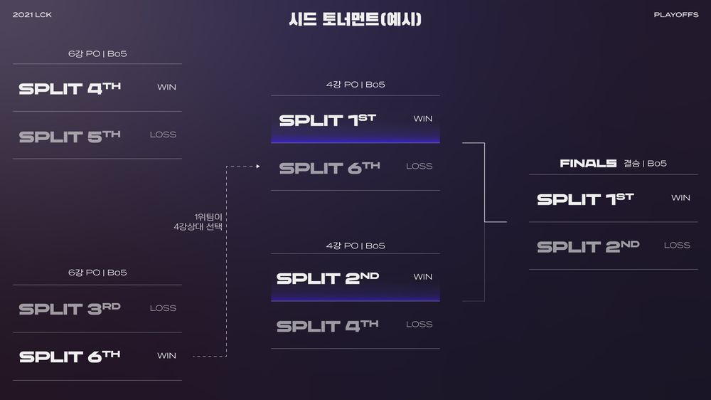
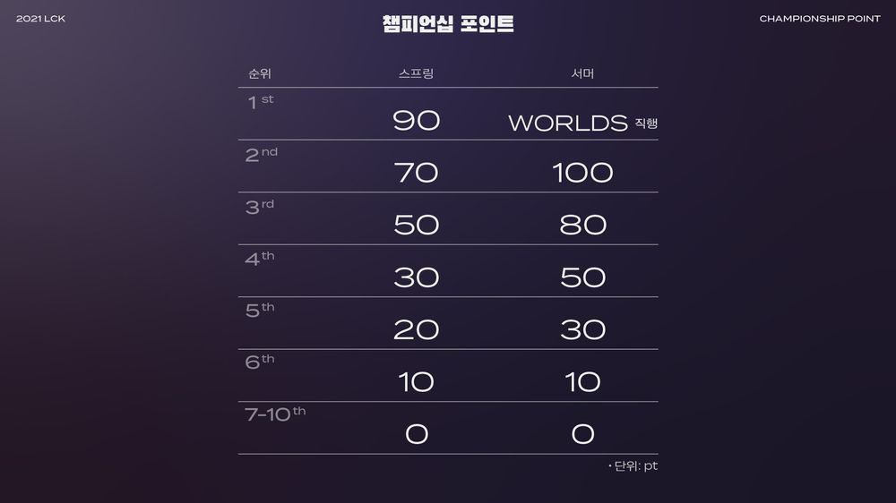

이번 시즌부터 포스트시즌 참가팀이 6팀으로 늘어났다. 또한 포스트시즌 방식은
LCS에서 2019 시즌에 진행했던 6강 포스트시즌 방식을 도입했다.
1위 팀에게 4강전의 상대를 결정할 수 있는 어드벤티지를 부여하는 점까지 같다.
이 때문에 이 방식의 이름이 '시드 토너먼트'가 되었다. 또한 플레이오프 전 경기 모두 5전 3선승의 다전제로 진행되며,
이는 2군 리그인 LCK CL에도 동일하게 적용된다. 그리고 이에 따라 챔피언십 포인트 획득도 조정되었는데,
스프링은 5위가 20점, 6위가 10점을 획득하는 걸 제외하면 2020 스프링과 동일하고,
서머 스플릿은 1위는 기존대로 월드 챔피언십에 직행할 수 있으며 2위는 100점, 3위는 80점, 4위는 50점, 5위는 30점, 6위는 10점을 획득하는 방식으로 바뀌었다.